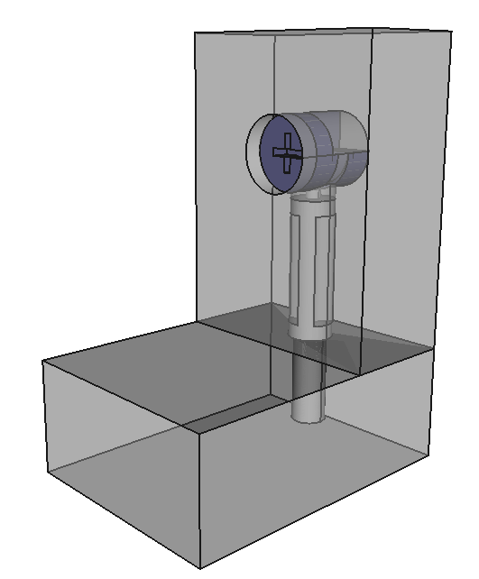

Exactly Sized Fastener¶
Using the parts made in Component Parts, we’ll create a
Fastener that utilises the Fastener Build Cycle.
Tip
Evaluation, selection, and application are fundamental concepts for using fasteners as more than just floating objects, read Fastener Build Cycle to learn more.
Fastener¶
For this example, we’ll create a WoodScrew and Anchor that are
perfectly sized.
from cqparts_fasteners import Fastener
from cqparts_fasteners.utils import VectorEvaluator, Selector, Applicator
from cqparts.constraint import Fixed, Coincident
class EasyInstallFastener(Fastener):
# The origin of the evaluation is to be the target center for the anchor.
Evaluator = VectorEvaluator
class Selector(Selector):
def get_components(self):
anchor = Anchor(
height=10,
)
# --- Define the screw's dimensions
# Get distance from anchor's center to screwhead's base
# (we'll call that the "anchor's slack")
v_rel_center = anchor.mate_center.local_coords.origin
v_rel_screwhead = anchor.mate_screwhead.local_coords.origin
anchor_slack = abs(v_rel_screwhead - v_rel_center)
# The slack is along the evaluation vector, which is the same
# as the woodscrew's axis of rotation.
# Find the screw's neck length
# This will be the length of all but the last evaluator effect,
# minus the anchor's slack.
effect_length = abs(self.evaluator.eval[-1].start_point - self.evaluator.eval[0].start_point)
neck_length = effect_length - anchor_slack
# Get thread's length : 80% of maximum
thread_maxlength = abs(self.evaluator.eval[-1].end_point - self.evaluator.eval[-1].start_point)
thread_length = thread_maxlength * 0.8
# Create screw
screw = WoodScrew(
neck_length=neck_length,
length=neck_length + thread_length,
)
return {
'anchor': anchor,
'screw': screw,
}
def get_constraints(self):
last_part = self.evaluator.eval[-1].part
return [
Coincident(
self.components['screw'].mate_threadstart,
Mate(last_part, self.evaluator.eval[-1].start_coordsys - last_part.world_coords),
),
Coincident(
self.components['anchor'].mate_screwhead,
self.components['screw'].mate_origin,
),
]
class Applicator(Applicator):
def apply_alterations(self):
screw = self.selector.components['screw']
anchor = self.selector.components['anchor']
screw_cutter = screw.make_cutter() # cutter in local coords
anchor_cutter = anchor.make_cutter()
# screw : cut from all effected parts
for effect in self.evaluator.eval:
screw_coordsys = screw.world_coords - effect.part.world_coords
effect.part.local_obj = effect.part.local_obj.cut(screw_coordsys + screw_cutter)
# anchor : all but last piece
for effect in self.evaluator.eval[:-1]:
anchor_coordsys = anchor.world_coords - effect.part.world_coords
effect.part.local_obj = effect.part.local_obj.cut(anchor_coordsys + anchor_cutter)
Using the Fastener¶
Now that we’ve created a Fastener that will pick, place, and alter
the part geometry it interfaces with, let’s try it out!
First let’s make some parts to join together
class ConnectedPlanks(cqparts.Assembly):
fastener_class = EasyInstallFastener
def make_components(self):
# Wood panels
p1 = WoodPanel(
length=40, width=30,
_render={'alpha': 0.5}
)
p2 = WoodPanel(
length=40, width=30,
_render={'alpha': 0.5}
)
# Fastener
fastener = self.fastener_class(parts=[p1, p2])
return {
'panel1': p1,
'panel2': p2,
'fastener': fastener,
}
def make_constraints(self):
# Pull out component references
p1 = self.components['panel1']
p2 = self.components['panel2']
fastener = self.components['fastener']
return [
# Assembly's origin on panel1
Fixed(p1.mate_origin),
# Join panel at the corner
Coincident(
p2.mate_end,
p1.get_mate_edge(p2.thickness),
),
# Fastener assembly in the middle of a
Coincident(
fastener.mate_origin, # mate_origin's -Z axis is used for evaluation
p2.mate_end + CoordSystem(
origin=(0, 0, 25), # 25mm above panel1 surface
xDir=(0, -1, 0) # rotate so anchor faces inside
),
),
]
And to see what we’ve made:
>>> connected_exact = ConnectedPlanks()
>>> print(connected_exact.tree_str(name='connected'))
connected
├─ fastener
│ ├○ anchor
│ └○ screw
├○ panel1
└○ panel2
>>> display(connected_exact)

FreeCAD’s render may be more clear (literally).